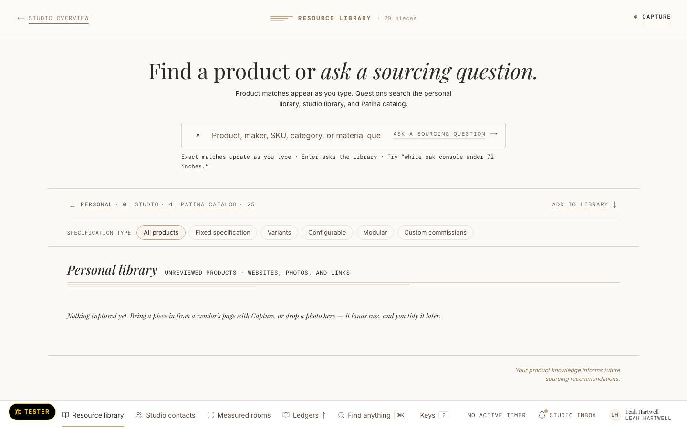
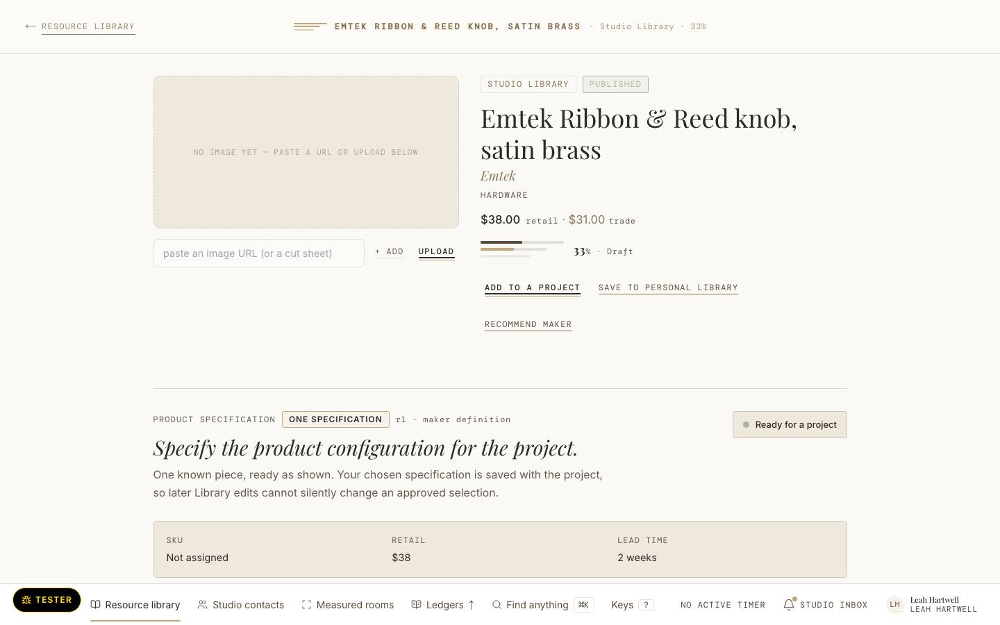

frame-library-t1 · today · The resource library at 1440, Leah's seat, on the local walk seed. A search hero, shelf tabs, rounded pill type filters, then a Personal library empty state whose underline reads as a close with nothing above it.

Today: walk screenshot from the local seed (SQ-800) · Illustrative fixture · Hartwell Studio is invented
frame-library-p1 · proposed · answers frame-library-t1 · Leah, with a maker on the phone: "find the piece I used on Holloway". She types Holloway; the studio shelf answers with the four pieces on Holloway Den's paper, as plate and caption with no box. One filter grammar. The shelf closes on its own rule. No filled act. Depends on U-Q20 (the card test: plate and caption for an unbounded collection) and U-Q13 (state as ink words).
Resource library
Matches names, makers and the jobs a piece was used on.
Studio library3
Pieces used on Holloway Den
Personal library · Patina catalogue4
Nothing on these shelves names Holloway.
Marks at rest: today 32 · 13 · 15 · 33 · proposed measured at render
- 1 · The search holds the whole query and gives it a full field; nothing clipped. Source: WALK §5 (placeholder clipped).
- 2 · Shelf and type as one row of underline words; the pills retire. Source: D2 area 5, WALK §5.
- 3 · Results as plate and caption, no box; each caption names piece, maker and the job with its tick. Source: U-Q20.
- 4 · An empty shelf is the Section's eyebrow, one sentence and its close; never a lone underline. Source: uplift.md (b)5, WALK §5.
Illustrative fixture · Hartwell Studio is invented
frame-library-t2 · today · A library piece at 1440 on the local walk seed: boxed tags, a bordered tan specification panel and a filled "Ready for a project", three edge treatments in one fold.

Today: walk screenshot from the local seed (SQ-800) · Illustrative fixture · Hartwell Studio is invented
frame-library-p2 · proposed · answers frame-library-t2 · Leah, before she puts it on Linden's paper: "is this piece ready to specify?" The facts say so in one list; tags are ink words; "Used on" is ticked rows; "Add to a project" is a secondary. No progress bar, no tan panel, no filled act. Depends on U-Q13 (ink words) and U-Q20.
Arden lounge chair
Calloway & Brandt Upholstery
- Dimensions
- 31″ W × 34″ D × 30″ H, seat 17″
- COM
- 6 yards
- Lead time
- 10–12 weeks
- Trade price
- $4,180
Ready to specify: dimensions, COM, lead time and trade price are on file.2
Used on4
- Holloway Den Project Nora and Sam Holloway · in Pieces at $4,180 Open the paper
- Pell Court Dining Project Rosalind Fairweather · in Pieces Open the paper
SpecificationOne specification
One known piece, ready as shown. The chosen specification is saved with the project, so later library edits cannot change an approved selection.
Marks at rest: today 35 · 6 · 13 · 32 · proposed measured at render
- 1 · Tags are ink words, unboxed. Source: WALK §5 (boxed STUDIO LIBRARY / PUBLISHED), U-Q13.
- 2 · Readiness is a sentence that names what is on file, set against the facts list; the progress bar and tan panel retire. Source: WALK §5, D2 area 5.
- 3 · "Add to a project" is a scored secondary; nothing on the page is filled. Source: WALK §5 (filled "Ready for a project"), V18 Q8.
- 4 · "Used on" is a run of ledger rows, each with its job's tick and the stage word in ink. Source: uplift.md (c) area 5.
Illustrative fixture · Hartwell Studio is invented